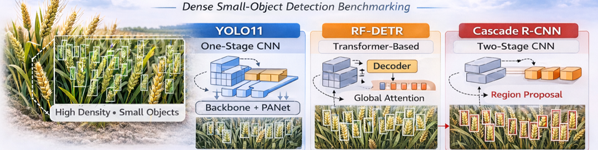

Agricultural Dense Small-Object Detection: Wheat Heads

Detecting and counting wheat heads in highly dense field images is challenging due to small size, heavy overlap, and low contrast. This project demonstrates end-to-end AI model development: training, evaluation, and deployment-focused optimization.
Approach
Compared multiple architectures: YOLO11/12 (one-stage CNN), RF-DETR (transformer-based), and Cascade R-CNN (two-stage CNN).

Model Summaries
YOLO11
Fast, CNN-based single-stage detector
Fast, CNN-based single-stage detector
YOLO12
Modern CNN + lightweight transformer blocks
Modern CNN + lightweight transformer blocks
RF-DETR
Transformer-based set-prediction detector
Transformer-based set-prediction detector
Cascade R-CNN
Two-stage CNN, strong localization for larger objects
Two-stage CNN, strong localization for larger objects
Evaluation Table
| Model | Params (M) | mAP@0.5 | mAP@[0.5:0.95] | MAE | RMSE | Bias | FPS (GPU) | Model Size (MB) | Peak VRAM (GB) | Notes / Run |
|---|---|---|---|---|---|---|---|---|---|---|
| YOLO11-N | 8.5 | 0.915 | 0.514 | 11.978 | 15.789 | -9.556 | 50.3 | 5.22 | 1.1 | fastest, edge-friendly |
| YOLO11-S | 22.3 | 0.923 | 0.521 | 12.020 | 15.774 | -10.646 | 28.5 | 18.29 | 1.5 | best detection in YOLO11 |
| YOLO11-L | 46.6 | 0.921 | 0.516 | 12.000 | 15.922 | -10.494 | 22.32 | 48.82 | 3.1 | largest YOLO11 |
| YOLO12-N | 9.0 | 0.928 | 0.520 | 11.873 | 15.684 | -11.418 | 32.47 | 5.27 | 1.4 | lightweight YOLO12 |
| YOLO12-S | 26.0 | 0.935 | 0.529 | 10.084 | 13.399 | -9.366 | 40.8 | 18.06 | 2.0 | best accuracy-efficiency |
| YOLO12-L | 47.0 | 0.939 | 0.531 | 10.587 | 14.032 | -10.080 | 19.4 | 51.05 | 3.9 | highest accuracy, slower FPS |
| RF-DETR Base | 31.9 | 0.909 | 0.507 | 13.780 | 17.933 | -13.747 | 17.18 | 351.62 | 3.95 | high model size, underperforms |
| Cascade R-CNN | 44.2 | 0.844 | 0.456 | 18.015 | 24.759 | 7.891 | 3.08 | 527.17 | 3.3 | very slow, poor small-object AP |
Key Results
🥇 Best practical deployment model: anaccuracy–efficiency balance
YOLO12-S
YOLO12-S
🥈 Best Performance: Best choice if accuracy > speed
YOLO12-L
YOLO12-L
⚡ Fastest / Edge deployment: Best for real-time constraints
YOLO11-N
YOLO11-N
🤖 Insight
YOLO > RF-DETR & Cascade R-CNN
YOLO > RF-DETR & Cascade R-CNN